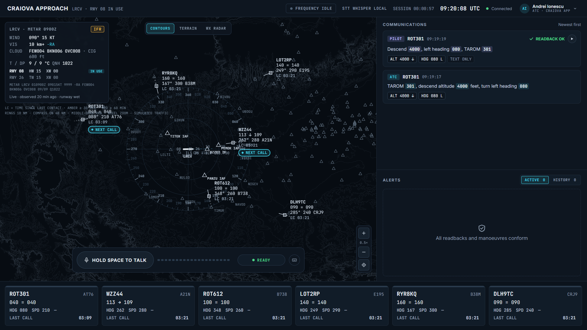

Copilot AI pentru controlorul
de trafic aerian
Ardeal Team
27 martie 1977 · Tenerife
583 de vieți
O comunicare radio neînțeleasă.
Dacă nu se potrivesc, controlorul află imediat.

LIVE DEMO
erori injectate live
de pe telefon
readback greșit
readback incomplet
fără răspuns
viraj greșit
depășire de nivel
fără contact
Vocea, de la microfon la alertă
Audio-ul nu părăsește laptopul.
AI-ul înțelege vorbirea.
Nu ia decizii de siguranță.
Cine plăteșteFurnizorii de trafic aerian
ex. ROMATSA
CumInstalat la client, în rețeaua lui,
fără cloud
2
Testare în paralel cu un sector real
Controlorul decide.
TowerWhisper se asigură că nimic
nu trece neauzit.
github.com/ramongen/towerwhisper